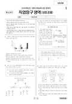

문제지


시험지를 먼저 풀어 보세요. 등급컷·표준점수·난이도는 흐리게 가려 뒀어요.
정답 변경 없음
이의신청 2문항 · 평가원 상세 답변 2문항
이의 요지
이의 신청자의 말씀대로 ‘국제수지 흑자의 감소’ 혹은 ‘국제수지 적자의 증가’ 라는 표현이 일반적으로 사용된다는 지적에는 동감합니다
평가원 답변
본 문항의 출제 의도는 제시된 A국, B국의 국제수지에 공통적으로 영향을 주는 국제수지 항목을 찾고, 그 항목이 국제수지 증가(+)에 영향을 미치는 요인인지, 감소(-)에 영향을 미치는 요인인지를 탐구할 수 있는 능력을 평가하는 문제입니다. 즉, 서비스 거래에서 자본 유출이 국제 수지 금액에서 감소(-)요인으로 작용했다는 것을 파악하는 문항입니다.
이의 신청자의 말씀대로 ‘국제수지 흑자의 감소’ 혹은 ‘국제수지 적자의 증가’ 라는 표현이 일반적으로 사용된다는 지적에는 동감합니다. 그러나 본 문항에서 주어진 문두와 제시문의 내용을 통해서 볼 때, ‘국제수지 흑자의 감소’ 혹은 ‘국제수지 적자의 증가’ 라는 표현은 적절하지 않습니다. 그 이유는 다음과 같습니다.
‘국제 수지 흑자의 감소’ 혹은 ‘국제 수지 적자의 증가’ 라고 표현하기 위해서는 기준시점과 비교한 특정 시점에서 흑자, 적자의 증감을 알 수 있어야 합니다. 즉, 기준시점에서 국제수지 금액 또는 국제수지의 흑자, 적자 여부를 제시하고, 비교시점에서 국제 수지에 포함되는 경상수지와 자본수지의 모든 항목 수지를 판단할 수 있는 자료가 제공되어야 가능합니다. 그러나 본 문항은 이를 판단할 수 있는 자료가 제시되어 있지 않습니다. 따라서 A국과 B국 모두 국제수지가 흑자인지 적자인지 알 수 없는 상황에서 ‘국제수지 흑자의 감소’ 혹은 ‘국제수지 적자의 증가’는 본 문항에 적절한 표현이 아닙니다.
본 문항에 적절한 답지는 A국과 B국의 국제수지가 흑자이던 적자이던 이를 모두 포괄할 수 있는 내용으로 이루어져야 합니다. 이에 따라 답지 ④번에서 사용된 ‘국제수지의 감소 요인입니다’라는 표현이 적절한 이유는, 첫째, 국제수지는 수입과 지출의 차액으로서 수치 즉 금액으로 표시되게 되어 있습니다. 한국은행에서 발표하는 국제수지표상에서 국제수지는 반드시 수치(금액)로 표시합니다. 참고적으로 2008. 9월 국제수지표(2008. 10. 30발표)를 보더라도 경상수지 -1,218.5(백만 달러), 자본수지 -4,776.7(백만 달러)와 같이 모두 수치(금액)로 표시되어 있습니다. 이와 같이 국제수지는 수치(금액)로 표시되기 때문에 ‘증가(+)’ 혹은 ‘감소(-)’라는 표현을 사용할 수 있습니다. 둘째, 본 문항에 주어진 제시문에서 A국과 B국 모두 국제수지가 흑자인지 적자인지 모르는 상태이지만 양국 모두 서비스 수지 금액에서 마이너스 요인으로 작용한 것은 확실합니다. 따라서 양국 서비스 수지 금액에서 차감되므로 수치(금액)로 표시되는 국제수지는 반드시 감소(-)하게 되어 있습니다. 예를 들어, 국제수지가 흑자인 경우, 서비스 수지에서 차감된 것만큼 국제수지 금액은 감소하게 됩니다. 즉, 국제수지가 120억불(120억불 흑자)인 상황에서, 서비스 수지에서 20억불 차감되었다면 국제수지는 100억불로 감소하게 됩니다. 반대로 국제수지가 적자인 경우에도 서비스 수지에서 차감된 것만큼 국제수지 금액은 감소하게 됩니다. 즉, 국제수지가 -120억불(120억불 적자)인 상황에서, 서비스 수지에서 20억불 차감되었다면 국제수지는 -140억불(140억불 적자)로 감소하게 됩니다.
이와 같은 이유로 A국과 B국 모두는 서비스 수지 금액에서 차감됨으로 인해 국제수지가 감소됩니다. 그러므로 답지에 나타난 ‘국제수지의 감소 요인입니다’는 본 문제 상황에 적절한 표현이 되는 것입니다. 따라서 상업 경제 14번 문항의 정답은 ④번이 되고, 정답에는 이상이 없습니다.직업탐구 영역 : 유형(과목) : 상업경제
이의 요지
본 문제(19번)에서 보기 'ㄷ'에 대한 사항만을 이의 제기 했으므로 이에 대한 답변을 예를 들어 간략히 설명 드리겠습니다
평가원 답변
본 문항은 KOSPI지수, 이자율, 환율이 변동함에 따라 나타날 수 있는 경제적인 현상을 묻는 문항입니다. 본 문제(19번)에서 보기 'ㄷ'에 대한 사항만을 이의 제기 했으므로 이에 대한 답변을 예를 들어 간략히 설명 드리겠습니다.
우선 가격경쟁력이란 특정 국가(또는 회사) 제품의 가격이 타국(타회사)제품의 가격보다 더 저렴해서 고객이 상대적으로 싼 가격에 구매할 수 있어서 수출(또는 매출)이 늘어나는 것을 말합니다. 예를 들어 원ㆍ달러 환율이 1,000원에서 2,000원으로 상승해서 원화가치가 반으로 평가 절하되었다고 가정하겠습니다. 그러면 한국의 특정제품의 가격이 1,000원이었을 때는 미 달러화로 1달러에 수출할 수 있습니다. 그러나 환율이 달러 당 2,000원으로 상승하게 되면 미국에서 1달러 같은 가격으로 수출했을 경우 국내에서는 2,000원이 유입되어 이전보다 두 배의 효과가 발생하게 됩니다. 따라서 달러 당 1,000원이었을 때보다 1,000원의 이득이 발생합니다. 따라서 수출대금을 기존의 1,000원을 유지한다고 가정했을 때는 수출품의 가격을 1달러보다 훨씬 저렴하게(0.5달러)수출할 수 있으므로 미국 소비자들은 이전보다 반 가격으로 구매할 수 있게 됩니다.
이와 같은 이유는 달러화의 가치가 평가 절상되어 이전보다 달러화의 구매력이 두 배가 되었기 때문입니다. 이의 제기자가 간과하고 있는 중요한 문제는 미국의 소비자가 원화로 한국의 수출품을 구매하지 않고 달러화로 구매한다는 사실입니다. 반대로 국내에서 수입할 경우에는 정반대의 현상이 나타납니다. 환율이 상승하게 되면 수입품의 원화 가격이 상승하게 되어 국내소비자들의 미국제품에 대한 수요가 감소하게 되는데 이 경우는 미국에서 수입하는 제품의 가격이 국내제품보다 비싸지게 되어 (즉 가격경쟁력이 떨어지게 되어) 나타나는 현상입니다.
이와 같은 이유로 환율 상승(원화 평가절하)시 국내수출품의 가격경쟁력이 강화된다는 것은 맞는 것입니다. 따라서 상업 경제 19번 문항의 보기 'ㄷ'은 옳은 선택지이고, 정답에는 이상이 없습니다.
발행 기관: 한국교육과정평가원(KICE). 파일 위치: 이 사이트가 보관한 사본. 저작권은 발행 기관에 있습니다. 원본과 다르거나 게시 중단이 필요하면 연락처로 알려 주세요. 등급컷 출처 구분은 데이터 원칙에서 설명합니다.